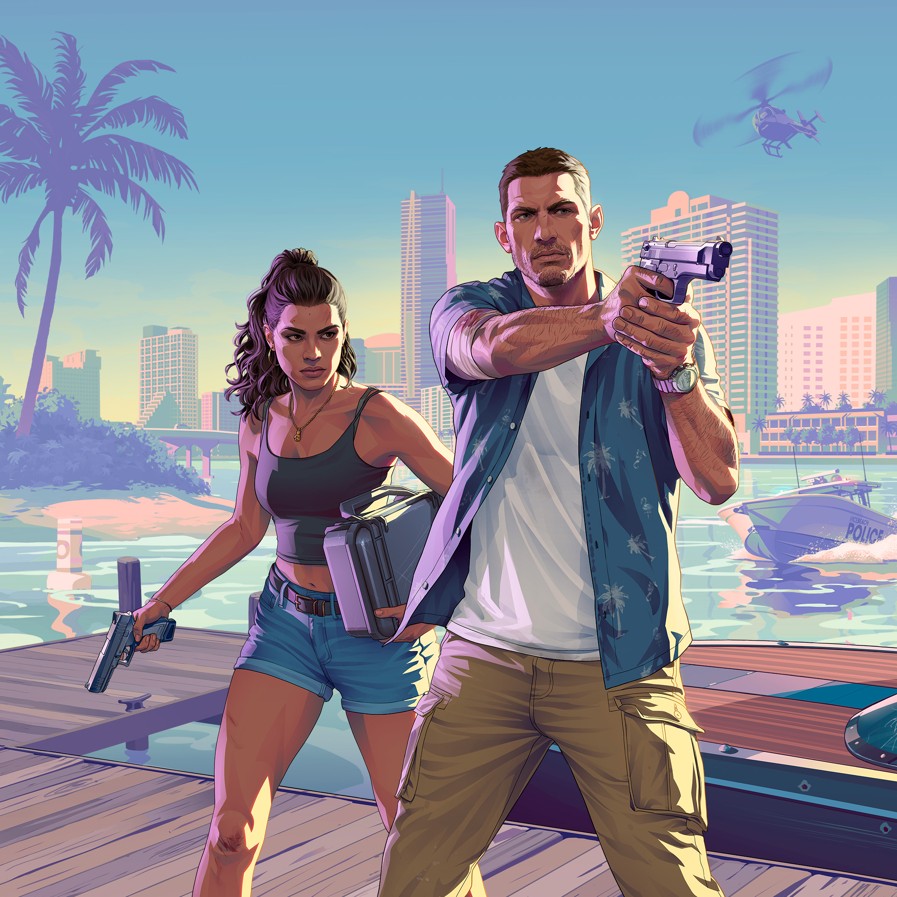

Rockstar Games anuncia en su cuenta de X que Grand Theft Auto VI se retrasa hasta el 19 de noviembre de 2026, y aclaran que "esos meses extra les permitirán terminar el juego con el nivel de calidad que los jugadores esperan y merecen".
El tráiler 2 llega a las 100 millones de visitas en YouTube, luego de 5 días. Además, se estima que en total sumando todas las plataformas habría llegado a las 500 millones de visualizaciones
El tráiler 2 es lanzado en YouTube, con una duración de casi 3 minutos. Además, Rockstar Games actualiza su página web, la cual contiene 70 nuevas capturas, 9 personajes, descripciones y hasta 6 ubicaciones.
Rockstar Games anuncia en su newswire que Grand Theft Auto VI se retrasa hasta el 26 de mayo de 2026 y que esperan compartir más información al respecto próximamente
Grand Theft Auto VI gana el premio al juego más esperado del año en los Game Awards 2024
El CEO de Take-Two Interactive, Strauss Zelnick en una entrevista con Conner Mather menciona que el juego sigue programado para otoño de 2025, pero sin dar una fecha específica, y que será "extraordinario y valdrá la pena la espera"
Grand Theft Auto VI gana el premio "Most Wanted" al juego más esperado del año en los Golden Joystick Awards
El tráiler del juego llega a las 90.6 millones de visitas en 24 horas, rompiendo el récord como el video no musical más visto en ese tiempo en la historia de YouTube
El tráiler es estrenado en el canal de Rockstar Games en YouTube tras ser filtrado

Una cuenta con el nombre de @Gta6trailerleak publica el tráiler con una marca de agua a 𝕏
El usuario de TikTok @azzarossi sube un video en el que presuntamente se muestra una vista áerea de la ciudad de Vice City, en lo que parece ser una versión en desarrollo del juego
También, menciona que "el mapa será el doble de grande que el de Los Santos", "habrán 3 grandes ciudades rodeadas de 4 áreas urbanas más pequeñas" y que "se podría entrar en el 70% de los edificios"
Rockstar Games anuncia en su cuenta de 𝕏 la fecha y horario del primer tráiler, el cual es puesto en estreno en YouTube
Además, la página web de rockstargames.com/VI es actualizada y ahora muestra un contador para el 5 de diciembre.
Rockstar Games, con Sam Houser a la cabeza, emite un comunicado anticipando el 25.º aniversario de la compañía donde se anuncia que el primer tráiler de Grand Theft Auto VI será mostrado a principios de diciembre
El periodista Jason Schreier publica un artículo en Bloomberg donde notifica que Rockstar planea anunciar Grand Theft Auto VI esta semana y que publicarán un tráiler en diciembre
Rockstar Games emite un comunicado en 𝕏 donde se señala que no esperan una interrupción en ninguno de sus servicios y que mostrarían su próximo juego cuando estén listos
El usuario teapotuberhacker difunde en GTAForums una carpeta de más de 3GB con 90 videos de distintas versiones de desarrollo de Grand Theft Auto VI
El contenido filtrado de más de una hora de duración muestra entre otras cosas los nombres de los personajes, la ciudad, armas, vehículos, líneas de diálogo, actividades, ubicaciones, mecánicas y eventos
Además, el usuario dio acceso a dos documentos PDF relacionados a los controles de cámara, un código en Python donde se habla sobre la fuente de letra y los colores que tendrían el menú del juego, y parte del código fuente de Grand Theft Auto V
Rockstar Games habla por primera vez de Grand Theft Auto VI confirmando que se encuentra "bien encaminado" y que "esperan compartir más información cuando estén preparados"
El periodista de videojuegos Tom Henderson sube un video a su canal de YouTube donde habla de información que recopiló sobre Grand Theft Auto VI en los últimos años
Menciona que el juego se ambientaría en la actualidad, que habría una protagonista femenina centrada en la tecnología y el hackeo, que el mapa cambiaría y evolucionaría en el futuro con la integración de DLCs, y que se implementaría un sistema de criptomonedas como recompensa jugable